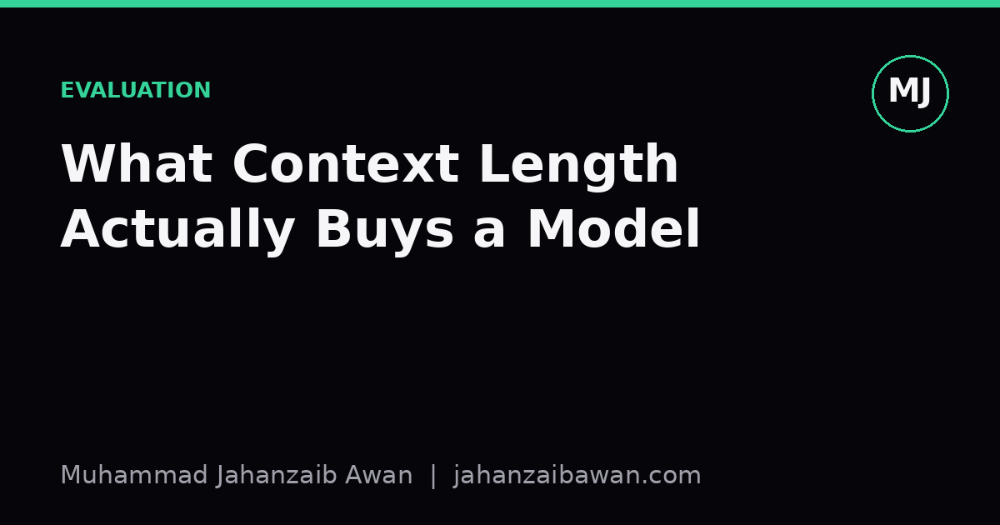

What Context Length Actually Buys a Model
Longer context windows promise more memory and more reasoning headroom, but the benefit curve bends sooner than most people expect.

Why context length gets oversold
Every new model release seems to lead with a bigger number: thirty-two thousand tokens, then one hundred thousand, then a million. It is an easy headline because it is concrete and comparable across vendors, unlike vaguer claims about reasoning or alignment. The implicit promise is that a model with a longer window simply knows more and forgets less, as if context length were a straightforward memory upgrade, the way adding RAM speeds up a sluggish laptop.
The analogy is not quite right, and the gap matters for anyone building a real system rather than reading a marketing page. A longer window does change what a model can attend to, but it does not change how well the model uses that material, nor does it guarantee the relevant information will be found when it is buried among thousands of less relevant tokens. Treating context length as a single scalar that only ever helps is how teams end up with slow, expensive pipelines that perform no better, and sometimes worse, than a tightly scoped shorter one.
I want to separate what longer context genuinely buys from what it merely appears to buy, using a concrete worked example rather than abstract claims, because the difference shows up clearly once you actually measure it rather than assume it.
What it genuinely buys: fewer forced cuts, more holistic answers
The clearest, least controversial benefit of a longer context window is that it reduces the need to chop input into arbitrary pieces. Imagine summarising a seventy-page technical report. With a four-thousand-token window you are forced to split the document into chunks, summarise each chunk, then summarise the summaries. Each stage loses detail and can introduce drift, where the final summary subtly misrepresents a claim made early in the document because it survived three rounds of compression. With a context window large enough to hold the whole report, the model can in principle see the argument as a single connected whole and produce a summary that respects relationships between sections that were pages apart.
This same benefit shows up in tasks with genuine long-range dependency: a contract where a clause on page two is modified by a definition on page forty, or a codebase where a function's behaviour depends on a configuration default set in a file nowhere near the call site. For these tasks, a short window does not just make the job harder, it makes correct answers structurally unreachable, because the necessary evidence is simply absent from what the model can see at once. No amount of clever prompting recovers information that was never in the window to begin with.
So the first honest claim is this: context length buys you the structural possibility of using distant information jointly, rather than piecemeal. That is a real and sometimes decisive advantage, and it is worth paying for when the task genuinely has that shape.
Where it stops helping: retrieval quality, not window size, becomes the bottleneck
Here is the worked intuition that matters most in practice. Suppose you give a model a context window containing fifty thousand tokens of loosely related documents, and the single fact needed to answer the question sits at token position thirty-one thousand, surrounded by material about unrelated topics. Having the fact technically present in the window is not the same as the model reliably using it. In controlled evaluations of long-context models, performance on needle-in-a-haystack style tasks commonly degrades as the relevant fact is placed further from the start or end of the input and deeper into the middle, even though the token is, strictly speaking, within the advertised window the whole time.
This matters because it means the practical ceiling on usefulness is not the window size advertised by the vendor, it is how reliably the model attends to the right slice of that window under realistic, noisy conditions. A one-hundred-thousand-token window filled with mostly irrelevant material can perform worse than a four-thousand-token window containing only the three paragraphs that actually answer the question, because the shorter window has no room for the model to get distracted or to average its attention across the wrong content. This is precisely why retrieval-augmented approaches, which select a small relevant subset of text before generation, often outperform simply stuffing everything into a giant context, even when the giant context would technically have fit the answer somewhere inside it.
There is also a cost dimension that compounds the problem. Processing cost and latency typically scale with the amount of context supplied, so doubling your context budget without improving relevance doubles your bill and your response time for, at best, no accuracy gain and, at worst, a measurable drop from added noise. A sensible evaluation here is not just accuracy against context length, it is accuracy against context length at matched cost, which usually tells a less flattering story for the brute-force long-context approach than the headline benchmark does.
The practical takeaway
If you are deciding how much context to give a system, start by asking whether your task genuinely has long-range dependency, where the correct answer requires jointly reasoning over distant parts of the input, or whether it merely has a long input with a short answer buried somewhere inside it. The first case justifies paying for a longer window. The second case is usually better served by retrieving or filtering down to the relevant passage first, then giving the model a short, clean context it can actually use well.
Either way, do not trust the advertised window size as a proxy for capability. Evaluate on your own data, with the kind of noisy, realistic context your system will actually face, and place the critical information at varying positions within that context rather than conveniently near the start. If accuracy does not improve as you grow the window, or if it improves only marginally while cost and latency grow linearly, that is the signal that you have already crossed the point where more context stops helping, and the next improvement has to come from better retrieval or better prompting, not from a bigger window.